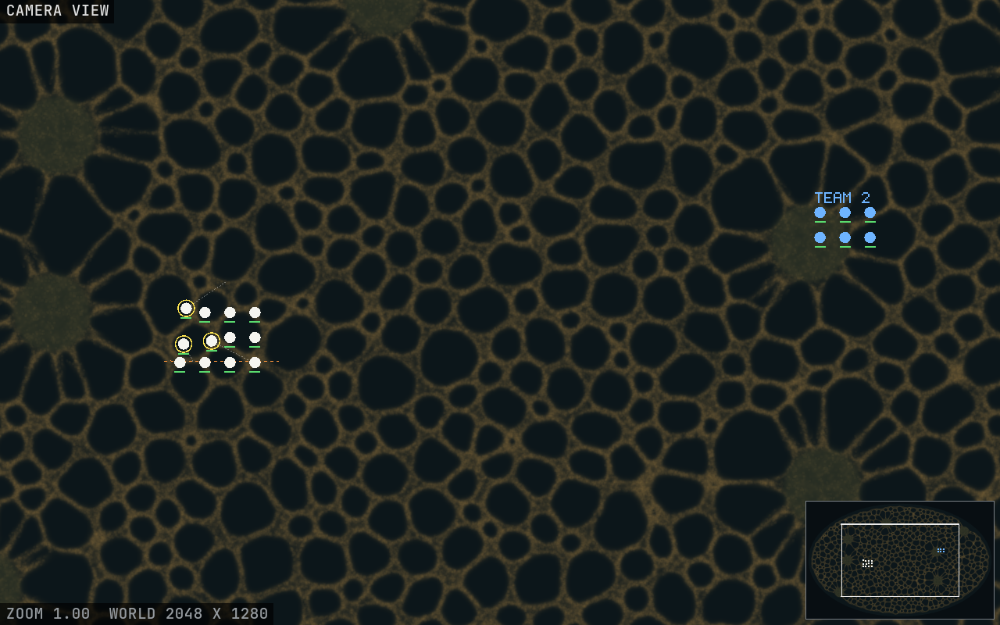
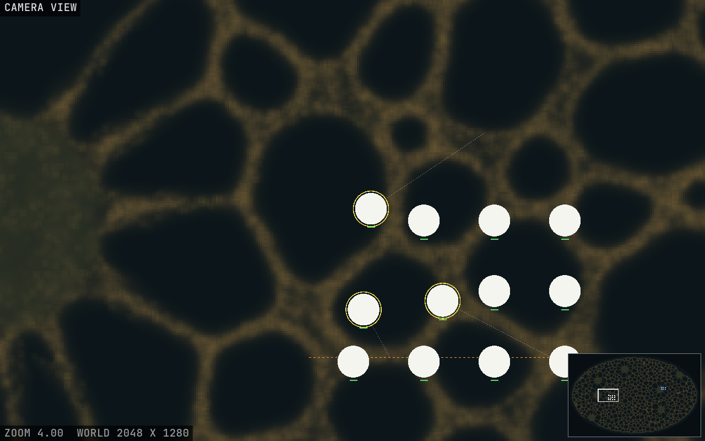
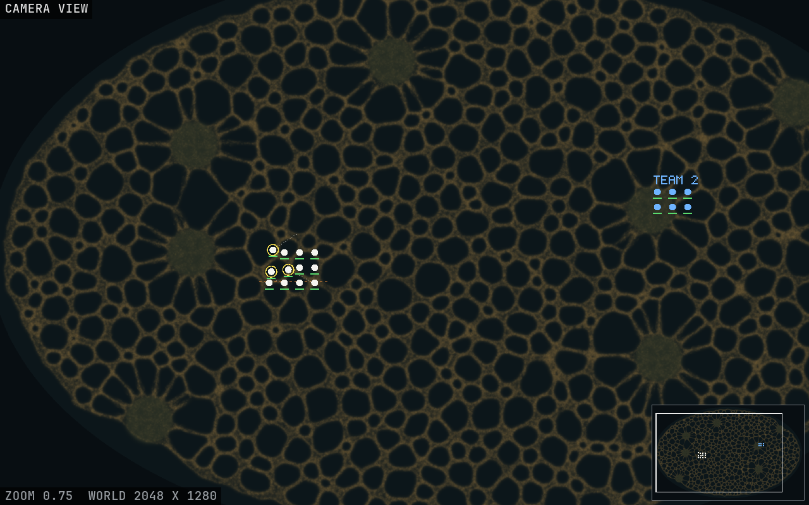
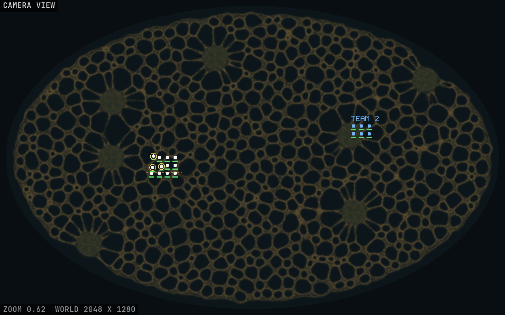

<title>Larder World Camera</title>
<meta name="claude:viewport-fit-sides" content="cover">
<link rel="stylesheet" href="https://fonts.googleapis.com/css2?family=Space+Grotesk:wght@500;700&family=Inter:wght@400;600&family=JetBrains+Mono:wght@400&display=swap">
<style>
/* Layout: one reading column; pictures full width, each with its counts in a strip under it. */
:root {
  --bg: #f3f1ec; --fg: #1d2226; --muted: #5d6870; --panel: #e6e2d8; --line: #cbc5b8; --amber: #a86d12;
  --display: "Space Grotesk", system-ui, sans-serif; --body: "Inter", system-ui, sans-serif; --mono: "JetBrains Mono", ui-monospace, monospace;
}
@media (prefers-color-scheme: dark) { :root:not([data-theme="light"]) { --bg: #0d1316; --fg: #e4e6e3; --muted: #9aa6ad; --panel: #172026; --line: #2a353c; --amber: #e2a94a; color-scheme: dark } }
:root[data-theme="dark"] { --bg: #0d1316; --fg: #e4e6e3; --muted: #9aa6ad; --panel: #172026; --line: #2a353c; --amber: #e2a94a; color-scheme: dark }
body { background: var(--bg); color: var(--fg); font: 15px/1.55 var(--body); padding-left: max(16px, env(safe-area-inset-left, 0px)); padding-right: max(16px, env(safe-area-inset-right, 0px)); padding-block: 28px 48px }
main { max-width: 1000px; margin: 0 auto; display: grid; gap: 28px }
h1 { font: 700 30px/1.15 var(--display); margin: 0; text-wrap: balance }
h2 { font: 500 20px/1.2 var(--display); margin: 0 0 6px; text-wrap: balance }
p { margin: 0; max-width: 68ch }
.lead { color: var(--muted) }
figure { margin: 0; display: grid; gap: 0; border: 1px solid var(--line); border-radius: 6px; overflow: hidden; background: var(--panel) }
figure img { display: block; width: 100%; height: auto }
figcaption { display: flex; flex-wrap: wrap; gap: 6px 18px; padding: 10px 14px; font: 13px/1.4 var(--mono); color: var(--muted) }
figcaption b { color: var(--fg); font-weight: 400 }
.cap { padding: 0 14px 12px; font-size: 14px }
ul { margin: 0; padding-left: 20px; display: grid; gap: 4px; max-width: 70ch }
kbd { font: 12px var(--mono); border: 1px solid var(--line); border-radius: 3px; padding: 0 4px; background: var(--panel) }
.note { border-left: 3px solid var(--amber); padding: 8px 12px; background: var(--panel) }
code { font: 13px var(--mono) }
</style>
<main>
  <header style="display:grid;gap:8px">
    <h1>Larder world camera</h1>
    <p class="lead">This is the camera and the controls for a world bigger than the screen, running on the GPU sandbox, which is not yet the Larder world. The mould is the engine's own picture, pixel for pixel. Everything drawn on top of it is a unit or an order: a stand-in squad that walks where you send it, with no rules yet. The world here is 2048 × 1280 cells with 400,000 walkers at 10 s on seed 1, and the screen is 1280 × 800.</p>
  </header>

  <section>
    <h2>Zoom 1: one cell per pixel</h2>
    <figure>
      
      <figcaption><span>zoom <b>1.00</b></span><span>marks <b>49</b></span><span>selected <b>3</b></span><span>view on lavapipe <b>15.8 ms</b> (a CPU, not the 1070)</span></figcaption>
      <p class="cap">The minimap in the bottom right is the same frame, averaged down, with your view outlined in white and units shown as dots. The yellow rings mark the selection. One unit is walking up and right along its faint order line, and two hold a dashed orange burn line. Only the white team can be selected; the blue one stands for a second team or the player AI.</p>
    </figure>
  </section>

  <section>
    <h2>Zoom 4: each cell a 4-pixel block</h2>
    <figure>
      
      <figcaption><span>zoom <b>4.00</b></span><span>marks <b>49</b></span><span>view on lavapipe <b>15.5 ms</b></span></figcaption>
      <p class="cap">At zoom 1 and above the zoom steps are whole numbers, so every cell is the same size on screen and nothing gets smoothed. Units are sized in world cells, so they grow as you zoom in. Health bars and rings stay a fixed size in pixels.</p>
    </figure>
  </section>

  <section>
    <h2>Zoom 0.75: each pixel the mean of the cells under it</h2>
    <figure>
      
      <figcaption><span>zoom <b>0.75</b></span><span>samples a pixel <b>2 × 2</b></span><span>view on lavapipe <b>26.9 ms</b></span></figcaption>
      <p class="cap">Below zoom 1, each pixel averages the cells under it, so thin tubes fade instead of flickering as you pan.</p>
    </figure>
  </section>

  <section>
    <h2>The fit: the whole world</h2>
    <figure>
      
      <figcaption><span>zoom <b>0.62</b></span><span>minimap <b>hidden</b> (all on screen)</span><span>view on lavapipe <b>17.2 ms</b></span></figcaption>
    </figure>
  </section>

  <section style="display:grid;gap:10px">
    <h2>Try it on your PC</h2>
    <p><code>cargo run --release --bin mouldgpu</code>, then press <kbd>W</kbd> for the 2048 × 1280 world and <kbd>Q</kbd> for the squad.</p>
    <ul>
      <li><b>Camera:</b> the wheel zooms where the mouse is, middle drag pans, so does the mouse at a screen edge, and <kbd>M</kbd> shows or hides the minimap. Click the minimap to jump there.</li>
      <li><b>With the squad (<kbd>Q</kbd>):</b> left click or drag a box to select. Right click orders them to a spot, on the minimap too. Hold <kbd>F</kbd> and drag for a burn line. <kbd>Ctrl</kbd>+<kbd>1</kbd>–<kbd>9</kbd> makes a group, <kbd>1</kbd>–<kbd>9</kbd> recalls it, and pressing it twice centres the camera on it.</li>
      <li><b>Without the squad,</b> left and right drag paint and wipe the mould as before. Infecting moved from the middle button to <kbd>I</kbd>.</li>
    </ul>
    <p class="note">Not measured yet: what the camera costs on the GTX 1070. The panel shows it live as VIEW in the GPU time line. The figures above come from a software GPU and only show that the code runs.</p>
  </section>
</main>
